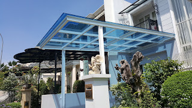
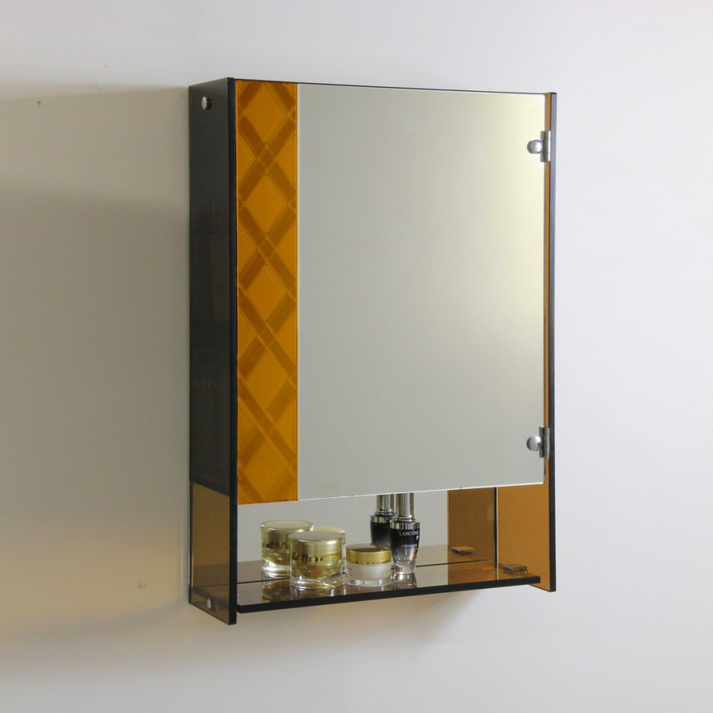
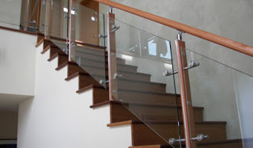
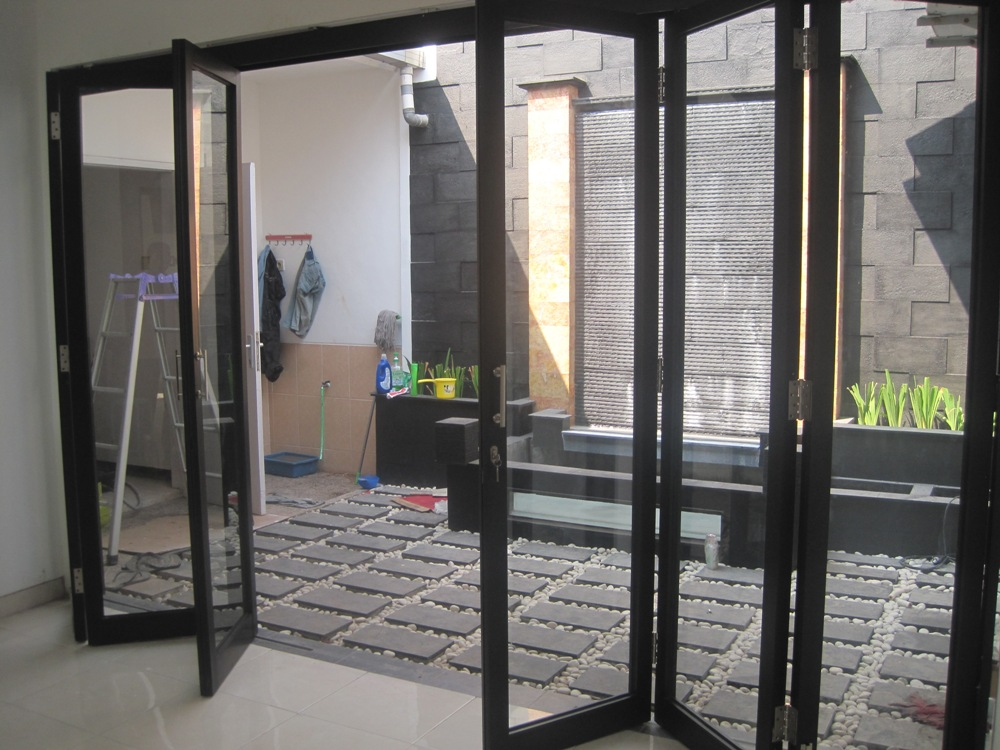

Kian berkembangnya kemajuan zaman, menjadikan banyak bahan atau material komplementer yang dapat mempercantik hunian atau tempat usaha anda. Banyak material penyokong yang dapat diterapkan seperti kaca, parket lantai kayu dan masih banyak lagi. Tidak cuma memperindah, tetapi material pelangkap hal yang demikian dapat memberi garansi keamanan pada penghuni di dalamnya. Tetapi, tidak hanya estetika tapi juga keamanan bagi penghuni di dalamnya. Tidak halnya hadir beraneka material kaca dan juga lantai yang semakin melengkapi nilai estetika sebuah bangunan. Kaca juga umum dipakai sebagai material untuk pintu, furnitur, railing tangga, shower box, kanopi, table top, dan malah panel dinding.
Sekarang telah hadir berjenis-jenis maca tipe kaca yang bisa ditemui, tiap-tiap kaca memiliki fungsinya masing-masing. Bisa untuk system keamanan, estetika dan masih banyak yang dapat di peroleh dari pemasangan kaca. Variasi kaca-kaca hal yang demikian diantaranya adalah kaca tempered Tegal, kanopi kaca, kaca frameless, kaca cermin, railing kaca dan masih banyak ragam kaca lainnya yang dapat anda dapatakan dan anda aplikasikan pada bangunan. Tak hanya material kaca sekarang juga terdapat material kayu atau parket lantai kayu jati. Berikut ini sedikit penjelasan mengenai berbagai macam kaca dan fungsi kaca dan juga parket lantai kayu jati yang dapat anda peroleh.
Jasa Pemasangan Kaca Tempered Tegal
Tidak anda mebutuhkan jasa maintenance kaca, anda dapat mengunjungi dis.or.id. Semakin banyak orang yang ingin mengaplikasikan kaca ini. Kini alat khusus untuk memotong tipe kaca yang satu ini. Kecuali itu saja. Banyak bagian properti yang dapat dijadikan dengan bahan berupa kaca tempered Tegal. Namun dahulu hanya gedung perkantoran atau sentra perbelanjaan modern saja yang menggunakan jenis kaca ini, kini rumah hunian juga telah dibangun dengan kaca tempered Tegal.
Banyak hal yang bisa dilakukakn kaca tempered Tegal ini salah satunya sebagai pembatas, untuk kamar mandi dan masih banyak lagi. Tapi, jasa pemasangan kaca tempered Tegal ini harus ekstra hati-hati. Bukan sembarang alat yang digunakan untuk memotong kaca tempered Tegal pantas dengan kebutuhan. Harga yang ditawarkan untuk pemasangan kaca tempered Tegal sangat murah.
Info Pemesanan Selengkapnya
Google Maps: https://www.google.com/maps/d/u/0/viewer?mid=1wHa3dBFC0jOCBS2FtlNAYKtIEp5M6KyQ&ll=-7.27380280025364%2C112.65243155000007&z=18
Note: https://www.facebook.com/notes/distributor-of-industrial-supply/kontraktor-jasa-pemasangan-kaca-tempered/1785713878395158/
Event: https://www.facebook.com/events/260234754508702/
Portfolio Produk: https://www.facebook.com/1681607345472479/photos/?tab=album&album_id=1712631995703347
Distributor & Supplier Kaca Shower
Seluruh orang pasti ingin punya kamar mandi yang kondisinya selalu bersih sehingga dapat terasa lebih nyaman dikala dipakai. Dengan mengaplikasikan kaca shower pastinya kamar mandi yang dimiliki akan lebih nampak mewah dan menjadi sekat antara area berair dan area kering. Tak ingin lebih total lagi, kamar mandi yang menerapkan shower ini bisa dilengkapi dengan komponen lain adalah shower screen atau bisa disebut dengan kaca shower. Penyekat ini akan memisahkan antara tempat basah yang dipakai untuk mandi atau meletakan shower dan daerah lain yang yakni zona kering. Selain ini akan berdampak kepada biaya yang akan dikeluarkan untuk membayar tukang. Apalagi sekarang telah ada toko penjual shower screen yang memasarkan produknya dalam cara satu paket termasuk pemasangannnya.
Disana anda dapat mendapatkan kac shower yang layak dengan kemauan anda. Harga yang ditawarkan malahan tergolong sangat murah.
Distributor, Supplier & Jasa Pasang Kanopi Kaca

Pintu Kaca Shower pada kamar mandi adalah salah satu pilihan yang baik untuk desain interior kamar mandi modern. Seiring dengan perkembangan zaman di dunia properti, sekarang kanopi kaca terlah berkembang pesat mencontoh arsitektur modern . Dan sensasi mandi menjadi lebih asik untuk dirasakan. Harga atap kaca per meter persegi juga sungguh-sungguh dipengaruhi oleh struktur pensupport yang di pakai. {Bila tembus pandang, kaca meresap cahaya yang masuk sehingga semakin tebal kaca maka semakin sedikit sinar yang bisa melewatinya, maka sifat transparannya makin berkurang.|Di samping pintu kaca shower akan membuat kamar mandi kecil nampak lebih besar. Pada atap akrilik, perembesan sinar yang terjadi demikian kecil sehingga padahal ketebalannya bertambah, sifat transparannya tak banyak berubah. Atap akrilik atau dapat juga disebut atap kaca acrylic ini banyak ditemukan di sebuah bangunan rumah, seperti ruko, apartemen, resto, mall, sampai bangunan gedung.
Sekiranya itu, kanopi juga bisa melindungi mobil dan kendaraan lain anda. Sekiranya fungsi utama kanopi sebagai pelindung untuk bangunan tersebut, pemasangan kanopi kaca juga dapat membikin bangunan menjadi menonjol lebih menawan dan menarik, apalagi menerapkan konsep yang sama dengan konsep rumah minimalis. Tak anda sedang mencari kanopi kaca, anda bisa lantas mengunjungi dis.or.id.
Jasa Maintenance Kaca
Maintenance pada kaca sungguh-sungguh diperlukan supaya gedung pencakar langit milik Anda tampak baik dan bersih. Telah beberapa tahun, kaca gedung menjadi kusam sebab terik sinar matahari, debu, hujan, atau kotoran lainnya. Jasa maintenance kaca juga menawarkan pelayanan koreksi. Tak ada kaca yang rusak atau pecah, kapabel untuk melaksanakan pembetulan mampu membersihkan berjenis-jenis macam kaca dengan ukuran, betuk, serta warna yang pantas dengan yang Anda butuhkan. Berjenis-jenis, kaca akan tampak kusam karena sudah lama tak dibersihkan.
Kini juga hadir maintenance kaca untuk membersihkan kaca berbentuk melengkung.
Tidak anda mebutuhkan jasa maintenance kaca, anda bisa mengunjungi dis.or.id. Untuk itu, alat-alat patut lengkap sehingga kami sanggup membersihkan segala sudut gedung. Dis.or.id juga sudah mempersiapkan dengan pelbagai alat yang dapat diterapkan untuk menjangkau seluruh sudut gedung, sekalipun gedung Anda sangat tinggi. Oleh sebab itu, dis.or.id hanya memilih orang-orang yang betul-betul profesional dan sudah mempunyai pengalaman dalam hal maintenance kaca. Dengan sudah memberikan training terhadap tenaga spesialis sehingga mereka sudah bisa melakukan profesi mereka dengan betul-betul baik. Kecuali cuma dalam hal membersihkan kaca, mereka juga mampu menjalankan perbaikan serta penggantian kaca yang mengalami kerusakan.
Distributor & Supplier Pintu Kaca
Kini sudah tersedia berjenis-jenis jenis dan bermacam contoh pintu kaca yang sedang menjadi tren dikala ini. Ada banyak desain pintu kaca yang bisa kita temui seperti pintu kaca berbentuk sliding (geser) atau folding (lipat). Peralatan contoh pintu kaca bisa anda peroleh, tidak hanya contoh pintu kaca konvensional, merupakan pintu kaca lipat, namun juga pintu kaca geser. Anda bisa menetapkan apakah figur pintu kaca lipat satu, lipat dua, atau sliding (geser). Desain tersebut dapat disesuaikan dengan konsep properti Anda. Kini tak keok penting lagi yakni pemilihan kaca. Dalam hal ini, terdapat beberapa ragam kaca dengan mutu yang terbaik. Kini paling banyak diminati saat ini yaitu kaca tempered Tegal karena jauh lebih kuat dan tahan lama.
Dengan tenaga spesialis yang telah betul-betul handal dalam membuat beragam teladan pintu kaca.
Terdapat juga alternatif lain berapa kaca non-tempered yang harganya relatif lebih murah. Anda bisa memilih kaca tempered Tegal yang sekarang ini sedang naik daun.
Jual Kaca Cermin

Kaca cermin juga diwujudkan untuk yang lain seperti pintu. kaca cermin umum digunakan pada bukaan pintu atau jendela dinding luar, yang nantinya diharapkan berpenampilan mewah pada bangunan. Ukurannya pun dapat Anda sesuaikan dengan keperluan. Cermin dengan beragam ukuran juga tersedia. Jadi, cuma kelihatan transparan dari satu sisi saja. Tak saja, memang kesan minimalis terlihat dari cermin dengan format persegi atau persegi panjang. Sementara itu, saat dipandang dari luar, kaca ini reflektif. Artinya, Anda tidak dapat melihat yang ada di dalam ruangan.
Bahkan, Anda bisa pakai kaca cermin ini sekaligus sebagai material utama, seperti sebagai pintu lemari di kamar tidur Anda. Atau barangkali Anda menginginkan kaca cermin yang lantas bisa direkatkan pada bagian furniture tertentu seperti pintu lemari. Anda bisa menambahkan bingkai atau tanpa frame sesuai dengan kesukaan Anda. Cermin ini umumnya ditempatkan di kamar mandi, di atas wastafel, atau di kamar tidur. Atau kaca cermin ini juga bisa diwujudkan sebagai bahan pintu lemari. Dis.or.id menyediakan kaca cermin yang dapat anda beli dengan harga yang betul-betul murah dan dengan kwalitas terbaik.
Jasa Pemasangan Railing Kaca

Railing kaca menjadi salah satu bagian yang akan membuat nampak sungguh-sungguh minimalis. Mereka tak lagi membikin pagar tangga atau balkon dari kayu. Karenanya dari itu, para produsen berusaha untuk menghasilkan railing yang terbuat dari kaca dengan figur yang berbeda-beda. Tapi kaca pecah, kaca tempered Tegal tak akan melukai orang yang terkena kaca tempered Tegal hal yang demikian lantaran pecahan demikian itu kecil dan lembut, tidak berupa kepingan yang runcing.
Tidak ini tak hanya ditentukan oleh ketebalan atau harga tapi juga oleh variasi. Ini variasi kaca yang sungguh-sungguh kuat. Bila mensupport keamanan, railing kaca ini juga akan mempercantik desain interior rumah Anda. Dengan demikian, pecahan tak akan melukai siapapun. Pecahannya betul-betul kecil dan lembut sehingga tak akan melukai siapa saja yang terkena pecahan. Ini menentukan kuatnya konstruksi railing kaca. Sekiranya memberikan kesan minimalis pada interior rumah, ini juga membikin rumah Anda terlihat lebih nyaman untuk dihasilkan daerah tinggal.
Sekarang dis.or.id sudah menyediakan railing kaca berkulitas dan bermutu. Harga yang benar-benar ekonomis serta mutu terbaik yang sudah terjamin membuat anda tidak akan menyesal membeli railing kaca di dis.or.id. Tentu dengan harga yang murah tapi konsisten berkelas.
Jasa Pemasangan Kubikel Toilet
Kubikel WC memiliki desain yang mewah dan elegan sehingga siapa saja yang melihatnya pasti akan tertarik, tak cuma itu kubikel kaca memberikan kesan bersih, rapid an tertata. Kubikel kamar kecil adalah kaca pembatas yang diterapkan pada kamar kecil.
Kaca sekarang banyak diterapkan sebagai penyekat ruang. Salah satunya di kamar mandi. Jikalau anda sedang membutuhkan kubikel kamar kecil, anda dapat seketika mengunjungi web dis.or.id. Sebab disana terdapat kubikel kamar kecil dengan beraneka ukuran serta ketebalan kaca.
Harga yang ditawarkan malahan cukup relatif murah.
Karena disana terdapat berbagai ukuran kubikel WC yang bisa anda jadikan opsi untuk hunian atau temap usaha anda.
Distributor & Supplier Pintu Lipat Kaca

Pada kenyataannya, harga kaca tempered ini tidak terlalu mahal. Mak dari itu, kaca ini ditawarkan dengan harga yang cukup dan relatif murah. Macam kaca nomor 6 ini benar-benar direkomendasikan untuk dijadikan sebagai bahan membuat pintu lipat kaca.
Banyak hal yang telah Anda ketahui perihal pintu kaca lipat tempered. Pastikan Anda memilih kaca tempered kualitas terbaik agar pintu lipat yang Anda pesan bisa dipakai dalam kurun waktu yang betul-betul lama. Hinges merupakan aksesoris vital, sebab aksesoris inilah yang berperan untuk menopang berat pintu kaca lipat.
Distributor & Supplier Partisi Kaca
Anda bandingkan sendiri berapa tarif yang Anda seharusnya siapkan untuk membikin partisi tembok. Anda patut beli batu bata, pasir, dan semen. Banyak ruangan yang disekat dengan partisi kaca. Tarif ini dikerjakan menghemat tarif membuat bangunan. Belum lagi untuk tukang yang dapat lebih banyak biaya pembelian bahan bangunan. Atas pertimbangan efisiensi, maka banyak orang yang beralih ke partisi kaca. Mutu, kini banyak rumah hunian yang menggunakan partisi kaca. Dengan harga yang amat cocok dengan kantong anda, Seketika daripartisi kaca ini tak perlu diragukan lagi. kunjungi dis.or.id sekarang juga. Akan namun, Anda wajib selektif dalam hal memilih kaca untuk partisi. Kecuali itu, tentukan juga tipe kaca yang mau dipakai apakah transparan, semi transparan, atau kaca cermin yang membikin ruangan privat. Karena juga dengan variasi kaca. Karena jenis kaca ini memutuskan privacy ruangan yang disekat. Ada kaca transparan, semi transparan, dan juga kaca cemin yang membikin ruangan sungguh-sungguh privat. Sekiranya anda sedang mencari distributor dan supplier partisi kaca yang mempunyai kaca dengan terbaik, anda tinggal mengunjungi dis.or.id. Disana anda akan partisi kaca yang pantas dengan harapan anda.